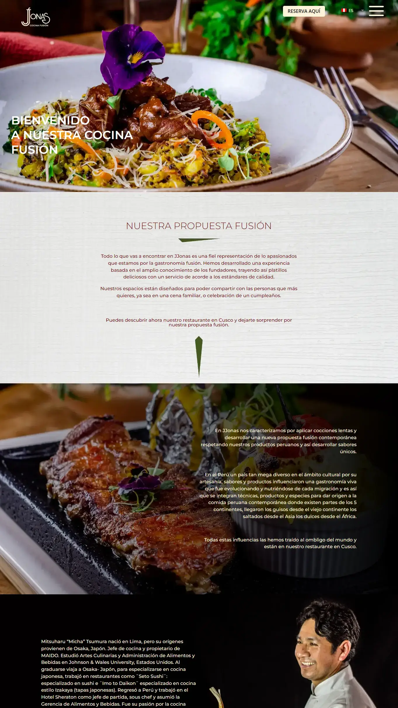

SITIO WEB DE JJONAS
Creación de sitio web
Sobre el proyecto
JJonas es un restaurante ubicado en el centro de Cusco y lleva varios años operando. Ya tenía presencia en las redes sociales, entonces quería un sitio web para tener mayor presencia en el internet.
Mis funciones: Comprar y configurar el hosting y dominio. Desarrollar el sitio web según el diseño. Subir el contenido, el texto y las imágenes.
También se habilito su correo institucional.
Herramientas utilizadas
WordPress
Para efectos prácticos, usamos WordPress como CMS base para construir el sitio web.
Divi
Usamos Divi como builder o constructor, para el maquetado y los estilos. Tiene muchas funciones, incluso de animación, que te ayuda mucho para replicar el diseño, Ademas de algunos plugins como complementos.
Un poco de código
Para el menú se utilizó sobretodo JavaScript y CSS para el efecto que se necesitaba.
Rank Math SEO
Usamos este plugin para posicionar el sitio web ya que es uno de los más completos.
Hotjar y Google Analytics
Para las estadísticas del sitio web, tanto las visitas como la interacción con el usuario.
TranslatePress
Para la traducción del sitio web y que el usuario pueda seleccionar el idioma, ya que el restaurante tiene turistas como clientes.